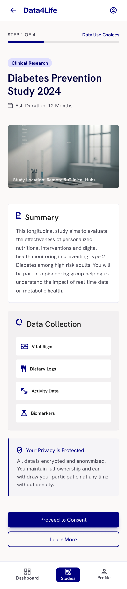
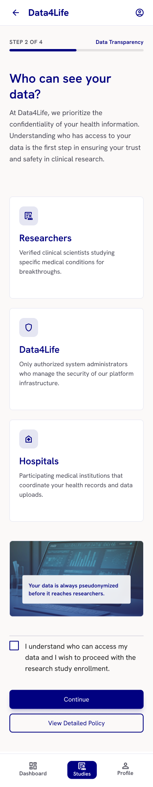
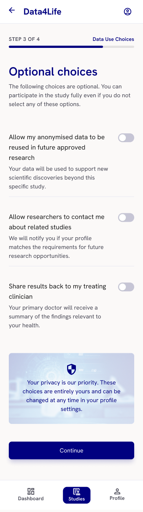
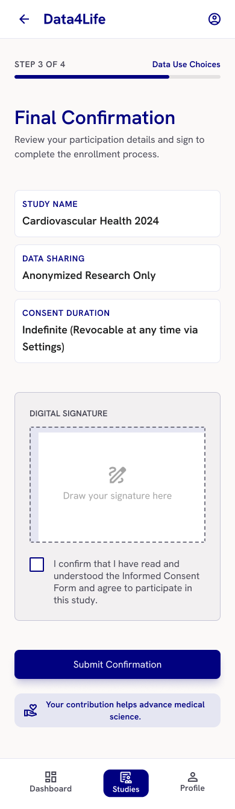

Redesigning informed consent for D4L Collect's move into clinical research.
Yunrong · yunrong.framer.website
D4L Collect is moving from observational digital studies into clinical-research rigor — eCRF, ePRO, patient registry. eConsent is the participant's first interaction and the first trust-and-compliance priority named for this role.
Consent must be complete enough for regulators (ICH-GCP, EU CTR, GDPR Art. 9) yet understandable for real people. Today the long document wins and comprehension loses.
How might we raise genuine comprehension across diverse participants without sacrificing completeness or adding site workload?
POV
People are asked to agree before they're equipped to understand.
Principles


4-step flow — Understand → Read & understand → Optional choices → Confirm & sign + living "My agreements" record


eConsent comprehension sits at the intersection of regulatory integrity and participant experience — exactly the space this role names. The design challenge isn't choosing between compliance and clarity; it's proving they're the same goal.
Regulation-as-design and WCAG 2.1 AA aren't constraints to route around here — they're the success criteria.
Signals of fit
Yunrong
yunrong.framer.website